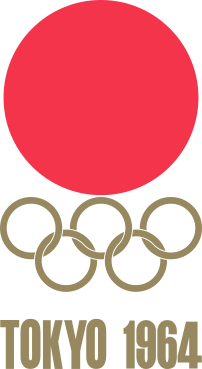

홈 > 브랜드 매거진 > Sapporo 1972
Sapporo 1972
삿포로 1972(Sapporo '72)는 홋카이도에서 열린 아시아 최초의 동계올림픽인 1972년 삿포로 동계올림픽의 브랜드다. 엠블럼은 일본 정상급 디자이너들의 지명 경쟁을 거쳐 그래픽 디자이너 나가이 카즈마사(永井一正)의 안이 선정됐으며, 그는 아트 디렉션과 디자인을 함께 맡았다. 도쿄 1964 올림픽 엠블럼으로 유명한 가메쿠라 유사쿠는 이 대회에서 포스터를 담당했다.
산업 분야 브랜드·비즈니스 · 공개 등급 편집 검수 · 브랜드 평가 4 ★
한눈에 보는 브랜드
삿포로 1972(Sapporo '72)는 홋카이도에서 열린 아시아 최초의 동계올림픽인 1972년 삿포로 동계올림픽의 브랜드다. 엠블럼은 일본 정상급 디자이너들의 지명 경쟁을 거쳐 그래픽 디자이너 나가이 카즈마사(永井一正)의 안이 선정됐으며, 그는 아트 디렉션과 디자인을 함께 맡았다.
도쿄 1964 올림픽 엠블럼으로 유명한 가메쿠라 유사쿠는 이 대회에서 포스터를 담당했다.
브랜드 관점
엠블럼은 세 요소를 세로로 쌓아 만든다. 붉은 원은 일본을 상징하는 일장기, 그 위 눈송이는 겨울을 나타내는 눈 결정으로 일본 옛 가문 문장(家紋)을 양식화한 형태이며, 아래에 오륜과 사포로 72 표기를 둔다.
세로 적층은 위에서 아래로 읽는 일본 전통 표기 방식을 반영한다. 세 요소를 정사각 모듈에 담아 세로형 가로형 정사각형으로 자유롭게 변형되는 시스템으로 설계했다.
일장기와 눈송이를 결합한 이 마크는 가즈마사 나가이가 일본 정상급 디자이너 8인 경쟁에서 선정된 작품으로, 전통 문장과 모더니즘 기하학을 융합한 일본 그래픽 디자인사의 대표 사례로 평가된다. 픽토그램은 야마시타 요시로가 1964 도쿄 올림픽 픽토그램을 동계 종목에 맞게 발전시켜 제작했고, 포스터는 도쿄 올림픽 엠블럼을 만든 가메쿠라 유사쿠가 사진과 아이덴티티를 결합해 디자인했다.
시작과 성장
제11회 동계올림픽은 1972년 2월 3일부터 13일까지 일본 홋카이도 사포로에서 열렸다. 아시아 최초의 동계올림픽이자 유럽과 북미를 벗어나 개최된 첫 동계올림픽으로, 일본은 1964 도쿄 하계올림픽에 이어 다시 한번 국제 대회 비주얼 아이덴티티 역량을 선보였다.
엠블럼은 일본 정상급 디자이너 8인의 경쟁 끝에 가즈마사 나가이의 안이 공식 엠블럼으로 채택되었다. 그는 일본을 상징하는 붉은 떠오르는 태양, 겨울을 상징하는 눈송이, 그리고 오륜이라는 독립된 세 요소를 결합했다.
눈송이는 일본 옛 가문의 문장에서 따온 눈 결정을 양식화한 것으로, 전통적 상징을 현대적 기하 형태로 번안했다. 도쿄 올림픽에서 확립된 일본의 디자인 시스템 전통이 사포로 대회로 이어지며, 픽토그램과 포스터 등 통합 비주얼 체계가 함께 구축되었다.
브랜드 아이덴티티
엠블럼은 세 요소를 결합한 구성이다. 일장기에서 온 떠오르는 태양의 붉은 원반, 겨울을 상징하는 눈송이, 그리고 올림픽 오륜과 'Sapporo '72' 레터링이다.
눈송이는 헤이안 시대까지 거슬러 올라가는 일본 가문 문장의 '첫눈' 문양을 재해석한 것으로 은색으로 처리돼, 금색을 쓴 도쿄 1964 엠블럼과 대비를 이룬다. 세 요소를 세 개의 정사각형 안에 조직해 세로·가로·정사각 포맷으로 자유롭게 변형할 수 있는 모듈형 시스템으로, 1960년대로서는 선진적인 적응형 아이덴티티였다.
제품과 서비스
제11회 동계올림픽 본 대회를 의미한다. 1972년 2월 사포로에서 알파인 피겨 스케이트 스키 등 동계 종목 경기가 열렸으며, 엠블럼 픽토그램 포스터로 이어지는 통합 비주얼 아이덴티티 체계가 경기장 사인 시상 응용물 등 대회 전반에 적용되었다.
사람들
현재 상태
가즈마사 나가이의 사포로 엠블럼은 일장기와 가문 문장 기반 눈송이를 결합한 미니멀 디자인으로, 일본 그래픽 디자인 황금기를 보여주는 올림픽 아이덴티티의 고전으로 꾸준히 인용된다.
타임라인
BI/CI 변천사
함께 읽을 브랜드

브랜드·비즈니스 · 편집 검수Tokyo 1964Tokyo 1964는 1960년에 기록된 Historical 계열의 브랜드 아이덴티티 사례입니다. Katsumi Masaru, Yoshiro Yamashita, Yu...
 브랜드·비즈니스 · 편집 검수IBM
브랜드·비즈니스 · 편집 검수IBMIBM는 1957년에 기록된 Historical 계열의 브랜드 아이덴티티 사례입니다. Paul Rand가 아이덴티티 작업의 디자이너로 기록되어 있습니다. 공개 섹션...
 브랜드·비즈니스 · 편집 검수INAX
브랜드·비즈니스 · 편집 검수INAXINAX는 1985년에 기록된 Historical 계열의 브랜드 아이덴티티 사례입니다. PAOS가 아이덴티티 작업의 디자이너로 기록되어 있습니다. 공개 섹션 정보는...
 브랜드·비즈니스 · 편집 검수Montreal 1976
브랜드·비즈니스 · 편집 검수Montreal 1976몬트리올 1976은 캐나다 디자이너 조르주 휴엘(Georges Huel)이 그래픽·디자인 총괄로 완성한 1976년 몬트리올 하계올림픽(제21회 올림피아드)의 비주얼...
Me
Mercado Famous
브랜드·비즈니스 · 편집 검수Mercado FamousMercado Famous는 2024년에 기록된 Designed by Gander 계열의 브랜드 아이덴티티 사례입니다. Gander가 아이덴티티 작업의 디자이너로 기...
AM
AMI AMI
브랜드·비즈니스 · 편집 검수AMI AMIAMI AMI는 2024년에 기록된 Designed by Wedge 계열의 브랜드 아이덴티티 사례입니다. Wedge가 아이덴티티 작업의 디자이너로 기록되어 있습니다....
 브랜드·비즈니스 · 편집 검수Aneo
브랜드·비즈니스 · 편집 검수AneoAneo는 2026년에 기록된 Recently added 계열의 브랜드 아이덴티티 사례입니다. Scandinavian Design Group가 아이덴티티 작업의 디자...
Br
Bruce Juice
브랜드·비즈니스 · 편집 검수Bruce JuiceBruce Juice는 2015년에 기록된 Designed by Marx 계열의 브랜드 아이덴티티 사례입니다. Marx Design가 아이덴티티 작업의 디자이너로 기...